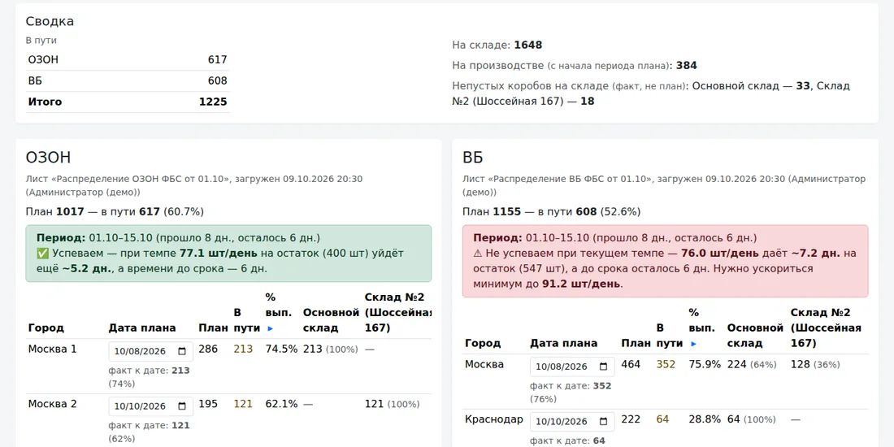
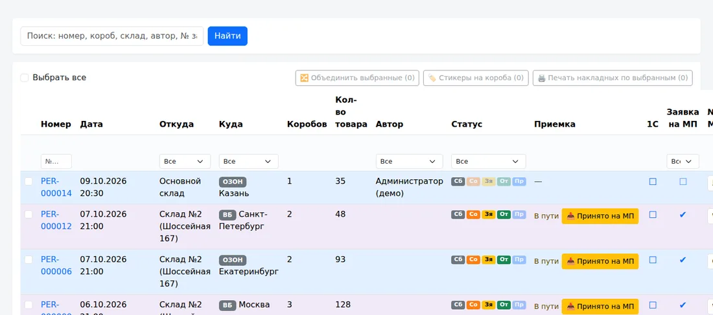
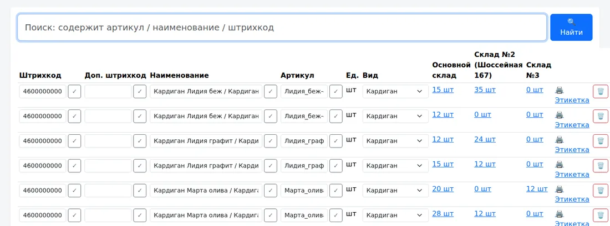

План отгрузок и учёт склада для тех, кто продаёт на Ozon и Wildberries
Видите по каждому городу, сколько отгружено к нужной дате и какой процент плана выполнен, где недовоз и что везти в первую очередь. Без таблиц, пересорта и ручных сверок.
Знакомо?
План живёт в таблицах
Каждый раз вручную считаете, сколько отгрузили по городу и успеваете ли к сроку.
Короба и пересорт
Непонятно, что в каком коробе, что уже уехало, а что ещё лежит на складе.
Расхождения при приёмке
Маркетплейс принял меньше или больше, чем отправили, а разбираться в цифрах некому.
Что вы получаете
Выполнение плана по городам
Для каждого города — дата плана, факт к этой дате в штуках и процентах, общий процент выполнения и прогноз: успеваем к сроку или нет. Меняете дату — цифры обновляются сразу.
Перемещения коробами
Сборка, заявка на маркетплейс, передача транспорту и приёмка на складе назначения — каждый этап виден статусом. Стикеры на короба и накладные печатаются из системы.
Недовоз и излишек
При приёмке фиксируется фактическое количество. Расхождение сохраняется отдельно и попадает в отчёт, а план считается по реально принятому.
Приёмка, размещение, остатки
Приёмка по накладной, размещение по коробам и ячейкам, инвентаризация, этикетки 58×40 мм. Штрихкоды сканируются так, как удобно: камерой смартфона, терминалом сбора данных (ТСД) или обычным сканером.
1С, Google Таблицы, кабинеты МП
Обмен с 1С, загрузка плана из Google Таблицы, выгрузки в форматах для заявок Ozon и Wildberries.
Выработка сотрудников
Сотрудник сканирует готовое изделие, система считает нормо-минуты и эффективность за смену. Для трикотажных и швейных цехов.
Как это выглядит
Скриншоты демо-версии. Все данные на них вымышленные.



Как начать
Демо на 20 минут
Покажем систему на вымышленных данных и обсудим, как у вас устроены склад и отгрузки.
Пилот 4 недели
Устанавливаем систему, загружаем вашу номенклатуру и план, обучаем сотрудников. В конце — цифры «до и после».
Решаете сами
Если результат устраивает — переходите на тариф. Если нет — выгружаем ваши данные в Excel, без обязательств.
Кому подойдёт
Подойдёт, если
- вы продаёте или производите товар и регулярно отгружаете на Ozon и Wildberries;
- у вас 1–3 склада или цеха и до нескольких десятков сотрудников;
- план и остатки сейчас в таблицах, возможно, вместе с 1С.
Скорее не подойдёт, если
- нужен крупный автоматизированный склад с конвейерами и тысячами адресных ячеек;
- на складе нет интернета и нет ни смартфонов, ни ТСД, ни сканеров у персонала.
Частые вопросы
Где хранятся наши данные?
На отдельном сервере, который разворачивается под вашу компанию. Данные принадлежат вам; по запросу удаляем их или выгружаем.
Какое оборудование нужно?
Работает с тем, что у вас есть: смартфон с камерой, терминал сбора данных (ТСД) или обычный сканер штрихкодов (USB или Bluetooth). Для печати этикеток подойдёт термопринтер 58×40 мм. Обычный ПК или ноутбук для руководителя и приёмки.
Можно ли выгрузить данные, если мы решим уйти?
Да. Номенклатура, документы приёмки и перемещений, остатки выгружаются в Excel.
Работает ли это с 1С?
Да, есть обмен документами с 1С. Состав обмена зависит от вашей конфигурации, обсудим на демо.
Сколько стоит?
Зависит от числа складов и пользователей — называем после демо, когда понятно, что вам нужно. Пилот — бесплатно или со скидкой, условия обсуждаем на демо.
Запросить демо или пилот
Расскажите коротко о своём складе, и мы покажем, как это будет работать у вас.
Telegram: @Arturle · Почта: lievs@mail.ru